舉辦追加主線關卡的通過報酬、主線關卡第1部的AP消耗變成1/4＆主線關卡第2部的AP消耗變成1/2地宣傳活動！
在主線關卡的通過報酬追加技能強化＆靈基再臨素材！請務必通過主線關卡來入手對培育Servant有用的道具。
另外，2019年3月19日(二) 17:00～5月10日(五) 11:59的期間，舉辦主線關卡第1部的AP消耗1/4、主線關卡第2部的AP消耗1/2的宣傳活動！
另外，3月27日(三)旬舉辦的期間限定活動「徳川廻天迷宮 大奥，參加條件第2部 第3章為「Lostbelt No.3 人智統合真國 SIN 紅之月下美人」的通過。 活用本宣傳活動，推進主線關卡的攻略吧！
詳情請在此處的公告確認。
※3月24日(日) 12:00修正
◆舉辦期間◆
2019年3月19日(二) 17:00～3月31日(日)5月10日(五) 11:59
※3月24日(日) 12:00修正
※自由關卡為對象外。
※強化關卡、幕間物語、曜日關卡為對象外。
主線關卡第1部的AP消耗量以期間限定變成1/4，主線關卡第2部的AP消耗量以期間限定變成1/2！
尚未通過主線關卡第1部和主線關卡第2部的Master，請務必活用此機會！
◆舉辦期間◆
2019年3月19日(二) 17:00～3月31日(日)5月10日(五) 11:59
※3月24日(日) 12:00修正
◆對象關卡◆
主線關卡第1部(從特異點F到終局特異點)
主線關卡第2部(從Lostbelt No.1到Lostbelt No.3)
※請注意第1部、第2部的自由關卡為對象外。
※就算在戰鬥中撤退的情況，AP的消耗仍是1/4或1/2。
今後，也預定在期間限定活動和期間限定宣傳活動中，會有將通過主線關卡設為開放條件的情況。 如果活用本宣傳活動，對推進主線關卡的攻略會有所幫助。
【3月24日(日) 12:00追記】
追加在通過主線關卡時可獲得的報酬。
至今為止可獲得的報酬再加上，通過各章節的話在通過報酬追加技能強化＆靈基再臨素材。
※已通過主線關卡，領取過去份量通過報酬的情況，可自禮物箱領取所有追加分量的通過報酬。
※本次贈予至禮物箱「追加分量通過報酬」不計算在禮物的最大持有數。
※就算禮物箱內的禮物達到最大持有數(300件)的情況也可領取，超過最大持有數也不會刪除。
◆翻新實施時間◆
2019年3月24日(日) 15:00～
【追加報酬】
| 通過主線關卡 | 追加通過報酬(合計) | |
|---|---|---|
| 特異點F 炎上汙染都市 冬木 |
龍之逆鱗 5個 龍之牙 5個 虛影之塵 5個 兇骨 14個 |
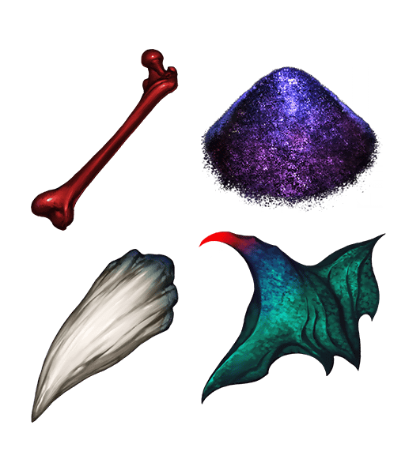 |
| 第一特異點 邪龍百年戰爭 奧爾良 |
Assassin銀像 5個 龍之逆鱗 3個 蠻神心臟 5個 龍之牙 17個 世界樹之種 8個 英雄之證 7個 |
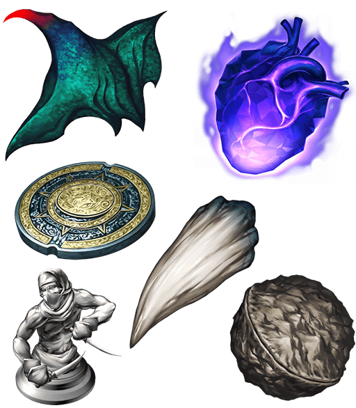 |
| 第二特異點 永續狂氣帝國 羅馬七省 |
Berserker銀像 5個 混沌之爪 8個 鬼魂提燈 2個 八連雙晶 15個 兇骨 3個 英雄之證 10個 |
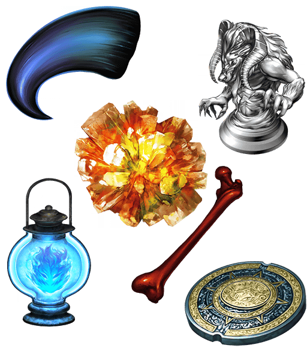 |
| 第三特異點 封鎖終局四海 俄刻阿諾斯 |
Rider銀像 5個 龍之逆鱗 2個 蠻神心臟 3個 混沌之爪 3個 蛇之寶玉 8個 鳳凰羽毛 5個 追憶的貝殼 3個 隕蹄鐵 5個 鬼魂提燈 6個 |
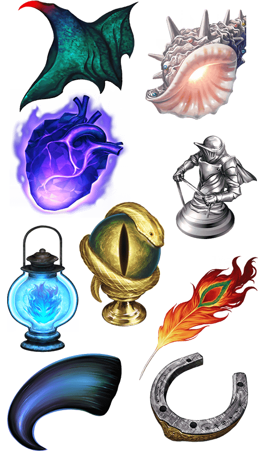 |
| 第四特異點 死界魔霧都市 倫敦 |
Lancer銀像 5個 人工生命體幼體 14個 禁斷書頁 14個 無間齒輪 12個 |
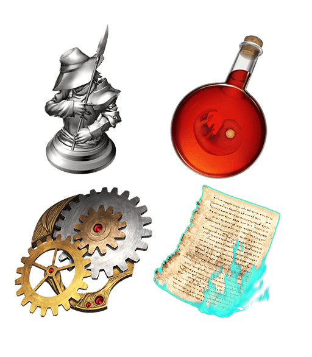 |
| 第五特異點 北美神話大戰 合眾為一 |
Caster銀像 5個 精靈根 8個 龍之逆鱗 4個 黑獸脂 9個 血之淚石 8個 戰馬的幼角 10個 無間齒輪 6個 龍之牙 2個 英雄之證 4個 |
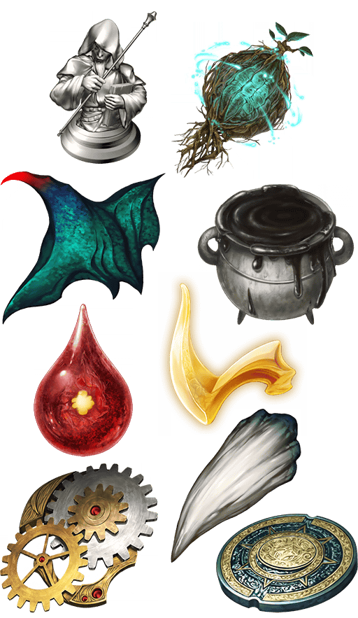 |
| 第六特異點 神聖圓桌領域 卡美洛 |
Saber銀像 5個 智慧之聖甲蟲像 11個 精靈根 4個 龍之逆鱗 7個 蠻神心臟 2個 封魔之燈 12個 血之淚石 2個 大騎士勳章 24個 愚者之鎖 16個 |
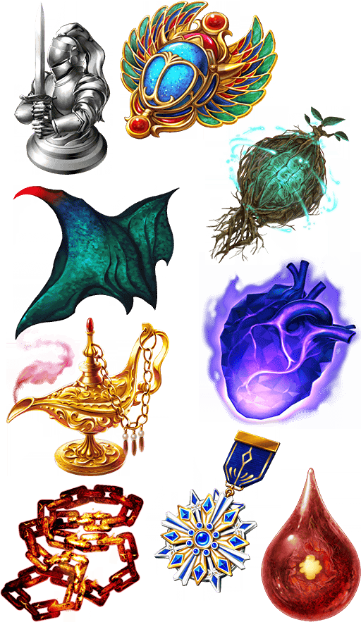 |
| 第七特異點 絕對魔獸戰線 巴比倫尼亞 |
Archer銀像 5個 咒獸膽石 18個 智慧之聖甲蟲像 2個 蠻神心臟 3個 原初的產毛 12個 蛇之寶玉 3個 萬死的毒針 14個 |
 |
| 終局特異點 冠位時間神殿 所羅門 |
咒獸膽石 5個 智慧之聖甲蟲像 5個 精靈根 5個 龍之逆鱗 5個 蠻神心臟 5個 鳳凰羽毛 5個 虛影之塵 5個 |
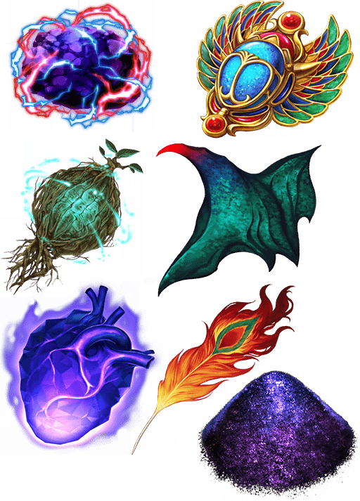 |
| 亞種特異點Ⅰ 惡性隔絕魔境 新宿 新宿幻靈事件 |
智慧之聖甲蟲像 5個 精靈根 3個 混沌之爪 8個 禁斷書頁 3個 無間齒輪 4個 魔術髓液 16個 |
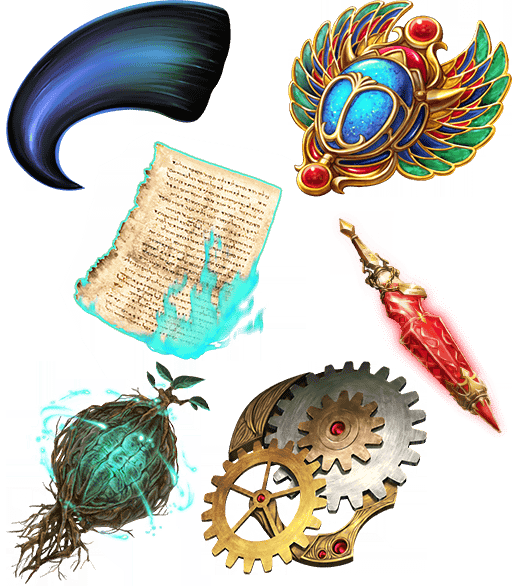 |
| 亞種特異點Ⅱ 傳承地底世界 雅戈泰 雅戈泰之女 |
奇奇神酒 7個 蠻神心臟 2個 黑獸脂 5個 混沌之爪 1個 鳳凰羽毛 20個 |
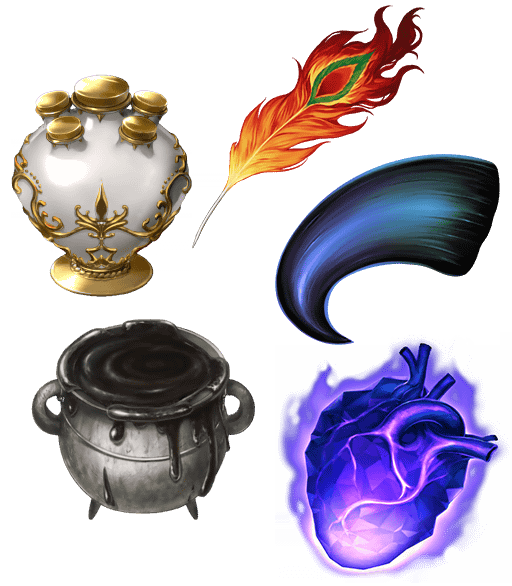 |
| 亞種特異點Ⅲ／亞種並行世界 屍山血河舞台 下總國 英靈剣豪七番勝負 |
奇奇神酒 6個 蠻神心臟 5個 枯淡勾玉 18個 鬼魂提燈 8個 |
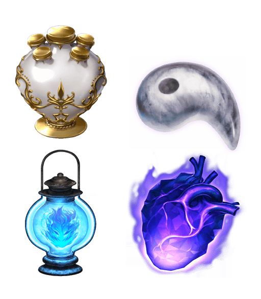 |
| 亞種特異點Ⅳ 禁忌降臨庭園 塞勒姆 異端的塞勒姆 |
蠻神心臟 3個 封魔之燈 5個 世界樹之種 3個 宵哭鐵樁 23個 |
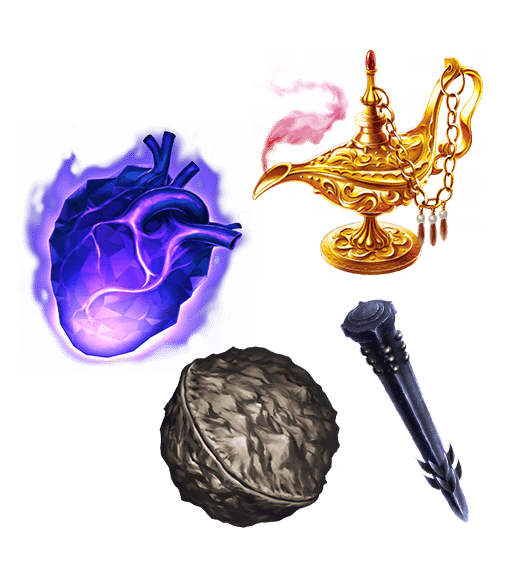 |
| Lostbelt No.1 永久凍土帝國 安娜塔西亞 獸國的皇女 |
奇奇神酒 6個 永遠結冰 15個 追憶的貝殼 10個 隕蹄鐵 5個 禁斷書頁 3個 勵振火藥 10個 |
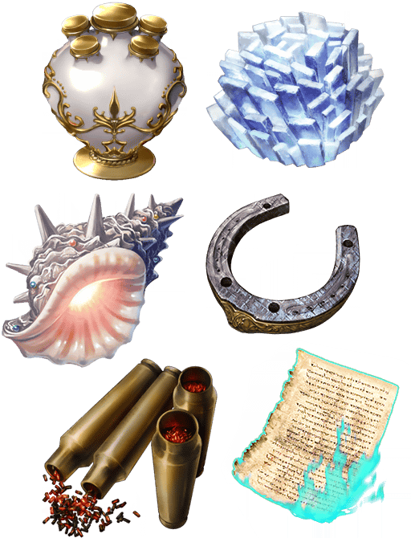 |
| Lostbelt No.2 無間冰焰世紀 諸神黃昏 不滅之火的好漢 |
蠻神心臟 2個 極光鋼 18個 巨人戒指 16個 世界樹之種 11個 |
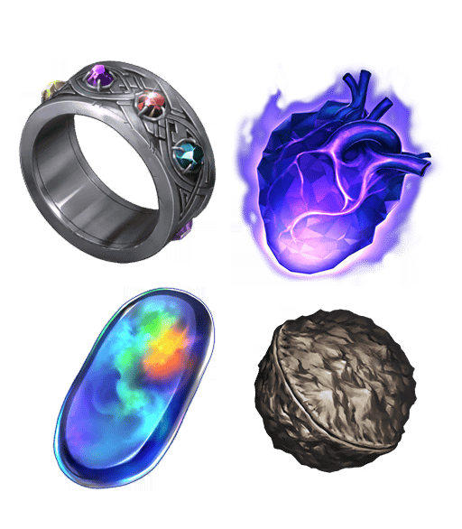 |
| Lostbelt No.3 人智統合真國 SIN 紅之月下美人 |
曉光爐心 11個 血之淚石 5個 閑古鈴 17個 巨人戒指 3個 隕蹄鐵 3個 無間齒輪 3個 世界樹之種 2個 |
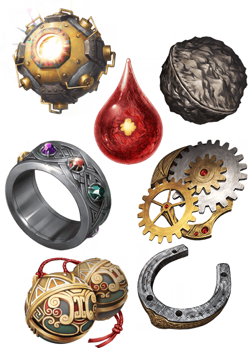 |
※第2部序幕「序」為對象外。 ※請注意第1部、第1.5部、第2部的自由關卡為對象外。